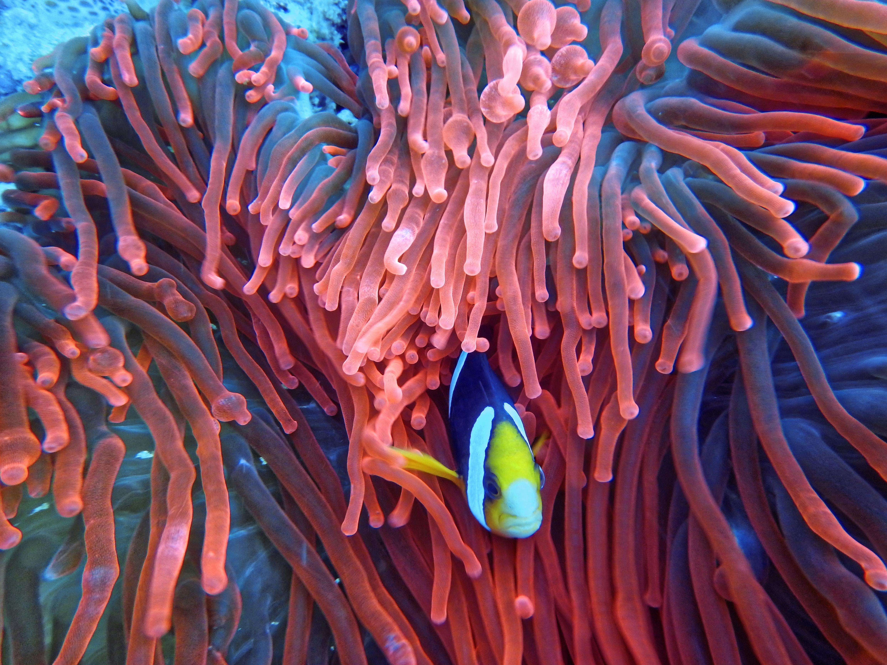

الأسماك
تعيش الأسماك في المياه المالحة والعذبة، وتتنوع في الحجم والشكل. تُعد مصدرًا غذائيًا هامًا للإنسان.

الحيتان
ثدييات بحرية ضخمة تعيش في المحيطات. تتواصل عبر أصوات وتهاجر لمسافات طويلة.

الشعاب المرجانية
تُعتبر غابات البحر المطيرة، وتدعم تنوعًا بيولوجيًا هائلًا تحت الماء.